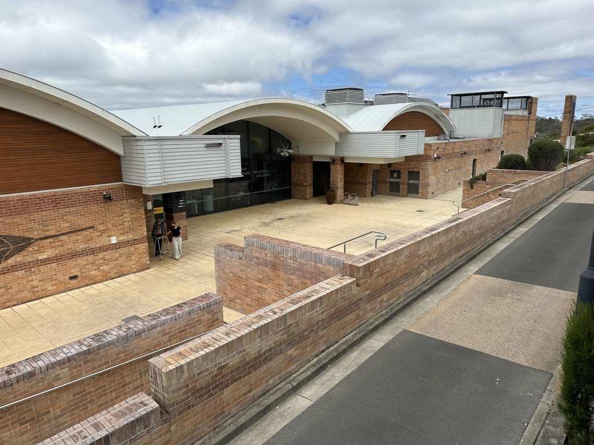

호주 블루마운틴스 시, 청사·문화센터·어린이집 등 시 소유 시설 9곳에 태양광·배터리…정전 때도 필수 서비스 유지

태양광 새로 3곳·태양광과 배터리 함께 3곳·기존 태양광에 배터리 추가 3곳, 뉴사우스웨일스 주 서부 시드니 기반시설 보조금과 시 재원으로 마쳐
호주 뉴사우스웨일스주 블루마운틴스 시의회가 시가 소유한 공동체 시설 9곳에 태양광 발전설비와 배터리를 설치하는 사업을 마쳤다. 대상은 카툼바의 시 본청과 의사당, 블루마운틴스 문화센터, 미드마운틴스 주민센터, 헤이즐우드 어린이집과 카툼바 어린이집, 카툼바 시빅센터 아케이드, 냅색파크 클럽하우스, 스프링우드 차량기지 정비소, 블루마운틴스 행성보건센터다. 9곳 가운데 3곳에는 태양광을 새로 달았고, 3곳에는 태양광과 배터리를 함께 들였으며, 나머지 3곳은 이미 있던 태양광에 배터리를 더했다. 생산한 전기는 시설에서 바로 쓰고, 배터리에 저장한 전기는 햇빛이 약할 때나 전력 공급이 끊겼을 때 꺼내 써 일부 필수 서비스가 정전 중에도 돌아가게 했다. '공동체 태양광·배터리 사업(Community Solar and Batteries Project)'이라는 이름의 이번 사업은 주 정부의 서부 시드니 기반시설 보조금과 시 재원으로 진행됐으며, 설비 용량과 사업비는 알려지지 않았다. 마크 그린힐 시장은 전력망에서 사 오는 전기를 줄여 운영비와 온실가스 배출을 함께 낮추는 효과가 사업이 끝난 뒤에도 이어질 것이라며, 이번 사업이 공동체 기반시설을 "더 지속가능하고, 재난에 강하고, 운영비가 덜 들게" 만드는 본보기라고 말했다.
시민에너지 관점
어린이집과 주민센터에 들인 배터리가 정전 때 필수 서비스를 지킨다는 것은, 지붕 위 태양광이 요금 절감을 넘어 재난에 대비하는 기반시설이 될 수 있다는 뜻이다. 배터리 값이 비싸 작은 지자체나 공동체가 감당하기 어렵다는 우려도 있지만, 미국 캘리포니아 북부의 블루레이크 란체리아 원주민 공동체는 스스로 소유한 태양광·배터리 마이크로그리드로 전력회사가 산불 예방을 위해 전기를 끊었을 때 지역 주민이 기댈 거점 구실을 해냈다. 이번 블루마운틴스 사업은 시가 소유한 설비지만, 동네 시설의 발전·저장 설비를 주민과 지역이 함께 소유하고 운영할 때 그 안전망과 이익이 지역에 오래 남는다. 국내 지자체도 주민센터·어린이집·대피소 지붕부터 태양광과 배터리를 묶고, 그 설비에 주민이 주인으로 참여하는 길을 열어야 한다.
출처: Inside Local Government 2026-10-27 Kelly Nealon 원문 보기
豪ブルーマウンテンズ市、庁舎・文化センター・保育所など市有施設9カ所に太陽光・蓄電池…停電時も必須サービスを維持
太陽光新設3カ所・太陽光と蓄電池の同時導入3カ所・既存太陽光への蓄電池追加3カ所、ニューサウスウェールズ州の西シドニー・インフラ補助金と市の財源で完了
オーストラリア・ニューサウスウェールズ州のブルーマウンテンズ市議会は、市が所有するコミュニティ施設9カ所に太陽光発電設備と蓄電池を設置する事業を終えた。対象はカトゥーンバの市本庁舎と議場、ブルーマウンテンズ文化センター、ミッドマウンテンズ・コミュニティセンター、ヘーゼルウッド保育所とカトゥーンバ保育所、カトゥーンバ・シビックセンター・アーケード、ナップサックパーク・クラブハウス、スプリングウッド車両基地整備場、ブルーマウンテンズ・プラネタリーヘルスセンターだ。9カ所のうち3カ所は太陽光を新設し、3カ所は太陽光と蓄電池を同時に導入、残る3カ所は既存の太陽光に蓄電池を追加した。発電した電気は施設でそのまま使い、蓄電池の電気は日射が弱いときや電力供給が途絶えたときに使って、一部の必須サービスが停電中も動くようにした。「コミュニティ太陽光・蓄電池事業（Community Solar and Batteries Project）」と名付けられた今回の事業は州政府の西シドニー・インフラ補助金と市の財源で進められ、設備容量と事業費は明らかになっていない。マーク・グリーンヒル市長は、送電網から買う電気を減らして運営費と温室効果ガス排出を同時に下げる効果は事業完了後も続くとし、コミュニティのインフラを「より持続可能で、災害に強く、運営費のかからない」ものにする手本だと述べた。
市民エネルギーの視点
保育所やコミュニティセンターに入れた蓄電池が停電時に必須サービスを守るということは、屋根の上の太陽光が電気代の節約を超えて災害に備えるインフラになりうることを意味する。蓄電池が高く小さな自治体や地域では負担しきれないという懸念もあるが、米カリフォルニア州北部の先住民コミュニティ、ブルーレイク・ランチェリアは自ら所有する太陽光・蓄電池のマイクログリッドで、電力会社が山火事予防のために送電を止めた際、地域住民のよりどころとなった。今回のブルーマウンテンズの事業は市が所有する設備だが、地域施設の発電・蓄電設備を住民と地域が共に所有し運営してこそ、その安全網と利益が地域に長く残る。韓国の自治体も、住民センター・保育所・避難所の屋根から太陽光と蓄電池を組み合わせ、住民が持ち主として参加する道を開くべきだ。
出典: Inside Local Government 2026-10-27 ケリー・ニーロン（Kelly Nealon） 原文を読む
澳大利亚蓝山市在市政厅、文化中心、托儿所等9处市有设施安装太阳能和电池…停电时也能维持基本服务
新装太阳能3处、太阳能与电池同时安装3处、在原有太阳能上加装电池3处，由新南威尔士州西悉尼基础设施补助金和市财政完成
澳大利亚新南威尔士州蓝山市议会完成了在9处市有社区设施安装太阳能发电设备和电池的项目。对象包括卡通巴的市政总部和议事厅、蓝山文化中心、中山社区中心、黑兹尔伍德托儿所和卡通巴托儿所、卡通巴市民中心拱廊、纳普萨克公园俱乐部会所、斯普林伍德车辆基地维修车间以及蓝山行星健康中心。9处中有3处新装太阳能，3处同时安装太阳能和电池，其余3处在原有太阳能上加装电池。所发电力在设施内直接使用，电池储存的电力在日照较弱或供电中断时使用，使部分基本服务在停电期间也能运转。这一名为"社区太阳能与电池项目（Community Solar and Batteries Project）"的工程由州政府西悉尼基础设施补助金和市财政共同出资，装机容量和项目费用未予公开。市长马克·格林希尔表示，减少从电网购电、同时降低运营成本和温室气体排放的效果在项目结束后仍将持续，并称该项目是让社区基础设施"更可持续、更有韧性、运营成本更低"的范例。
市民能源视角
托儿所和社区中心的电池在停电时守住基本服务，说明屋顶太阳能不仅能节省电费，还能成为防灾基础设施。有人担心电池价格昂贵，小型地方政府或社区难以承担，但美国加利福尼亚州北部的原住民社区蓝湖兰切里亚依靠自有的太阳能和电池微电网，在电力公司为预防山火而停电时成为当地居民的依靠。蓝山这次的项目是市政府所有的设备，但只有让居民和地方共同拥有、运营社区设施的发电和储能设备，这张安全网和收益才能长久留在本地。韩国地方政府也应从居民中心、托儿所、避难所的屋顶开始结合太阳能与电池，并为居民以主人身份参与开辟道路。
来源: Inside Local Government 2026-10-27 凯莉·尼伦（Kelly Nealon） 查看原文
Australia's Blue Mountains council fits solar and batteries at nine council-owned sites including its headquarters, cultural centre and childcare centres, keeping essential services running in outages
Three sites get new solar, three get new solar and batteries, and three add batteries to existing panels, funded by the NSW Western Sydney Infrastructure Grants Program and the council
Blue Mountains City Council in New South Wales, Australia, has completed a project installing solar panels and batteries at nine council-owned community facilities. The sites are the council headquarters and chambers in Katoomba, the Blue Mountains Cultural Centre, Mid Mountains Community Centre, Hazelwood Childcare Centre and Katoomba Children's Cottage, Katoomba Civic Centre Arcade, Knapsack Park Clubhouse, the Springwood Depot mechanics workshop and the Blue Mountains Planetary Health Centre. Three of the nine received new solar systems, three received new solar and battery systems, and the remaining three had batteries added to existing solar. Electricity generated is used on site, while stored power is drawn on when sunlight is weak or supply is interrupted, so that selected essential services can keep operating during outages. The Community Solar and Batteries Project was funded by the state's Western Sydney Infrastructure Grants Program together with the council, and neither the installed capacity nor the project cost has been disclosed. Mayor Mark Greenhill said cutting the power bought from the grid would lower both operating costs and greenhouse gas emissions well beyond the end of the project, calling it an example of making community infrastructure "more sustainable, more resilient and less expensive to operate."
Citizen Energy View
Batteries at childcare and community centres that keep essential services running in a blackout show that rooftop solar can be disaster-preparedness infrastructure, not just a way to trim bills. Some worry that batteries are too expensive for small councils or communities, but in northern California the Blue Lake Rancheria tribal community, using a solar and battery microgrid it owns, became a refuge for local residents when the utility cut power to prevent wildfires. The Blue Mountains equipment belongs to the council, but when residents and the local community jointly own and run the generation and storage at neighbourhood facilities, both the safety net and the returns stay local for longer. Korean local governments should start pairing solar and batteries on the roofs of community centres, childcare centres and shelters, and open a way for residents to take part as owners.
Source: Inside Local Government 2026-10-27 Kelly Nealon Read the original